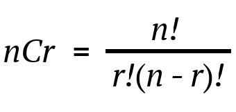

Today, we are going to discuss upon how we can compute Binomial
co-efficient using modulo inverse.
Note:
If you have not read our previous article on modulo multiplicative inverse,
we highly recommend you to click here and read it first, as
we will be using some concepts of that article here.
So, be relaxed and keep reading we will make this topic super easy for you
to absorb and digest 😊
As you know, we often require to deal with many problems which involves
permutations and combinations to get the final answer, and we often use
naïve approach to calculate number of combinations which definitely results
in to Time Limit Exceeded (TLE) or Wrong Answer (WA) verdict.
So, let’s learn an approach to overcome TLE.
First let us understand the Input and expected output:
E.g1. Input: N = 5, R = 3, P = 7
Output:
3
Explanation: as we know,

So, according to the formula, 5C3 = 5! / ( 3! *
(5-3)! ) = 120 / 12 = 10,
and after computing number of combinations we will be doing mod p i.e.
10 % P = 10 % 7 = 3, that’s our output.
E.g2. Input: N = 20, R = 15, P = 11
Output:
5
Explanation:
So, according to the formula, 20C15 = 20! / ( 15! * (20-15)! ) = 15504,
and after computing number of combinations we will be doing mod p i.e.
15504 % P = 15504 % 11 = 5, that’s our output.
let’s first discuss naïve approach to do this.
1. Naïve Approach – Brute Force:
As, you may have guessed, what we will be doing in naïve approach Yes, we
will be just using the same formula as discussed above in our program to
compute
n
C
r.
And after that we will be doing modulo with P, as above and hurrah !! we
got our answer, but remember that this is naïve approach and you are sure
to get TLE on this, so do read optimized approach for doing this.
Below is the implementation, of naïve approach:
Time Complexity: O( q * n )
Note
: if you are little experienced programmer, then you may think that instead
of calculating factorial each time in nCr formula we can precompute the
factorial and use it directly, So then the overall time complexity of
program would be just
O(q).
But, let me tell you one thing my friend, this approach fails because if we
have large numbers and if we perform division on that then we will get
unexpected results by this method
2. Optimized Approach:
For, optimizing or rather making our code work for bigger inputs as well we
will have to find out some way to store such huge numbers or alternative
way to avoid division of such huge number.
As you know that we cannot apply modulo operation on division directly, any
guesses? Yes, you guessed it right we will be using modulo multiplicative
inverse concept to make our code work for large numbers.
Concept: here, the core logic is simple instead of dividing N! by ( K!
* (N – K)! ) we will be multiplying N! by multiplicative inverse of K!
and (N – K)!.
Look, who’s here to compute modulo multiplicative inverse, remembered our
modulo inverse article? Yes, the one and only Fermat’s little theorem.
So, we will be computing modulo inverse using Fermat’s little theorem.
Below is the implementation of optimized approach:
Time Complexity: O( q * logn )
It is always better to solve a question after you learn a new concept as it
helps in making concrete concepts.
So, below are problems which are handpicked by Programmers Army to make your
concept more solid which you learned.
1. Problem from CodeChef:
https://www.codechef.com/problems
/CB01
2. Problem from Spoj: https://www.spoj.com/problems /NWERC11A/
We highly recommend to solve above problems if you got stuck read editorials for guidance.
So that’s it for this article we will be coming up with our next article on further topics of number theory very soon till then keep learning, keep coding, keep reading and keep improving !!
Happy Coding
By Programmers Army 😊